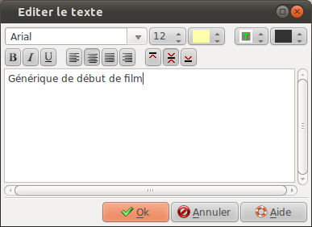

Éditer le texte
Éditer le texte La boite "Éditer le texte" permet de modifier le
texte d'un bloc :

| Première zone en haut | |||||||
| Police : |
Permet de sélectionner la police de caractère à utiliser | ||||||
| Couleur : | Permet de sélectionner la couleur du texte | ||||||
| Taille : | Permet de sélectionner la taille des caractères | ||||||
| Effet d'ombre : | Permet de donner un effet
de contour ou d'ombre au texte :
|
||||||
| Couleur de l'ombre : | Permet de sélectionner la couleur de l'ombre ou du contour | ||||||
| Deuxième zone | |||||||
 |
Met les caractères en
gras |
||||||
 |
Met les caractères en italique | ||||||
 |
Souligne les caractères | ||||||
 |
Alignement horizontal à gauche | ||||||
 |
Alignement horizontal au centre | ||||||
| Alignement horizontal justifié | |||||||
 |
Alignement horizontal
à droite |
||||||
| Alignement vertical en haut |
|||||||
| Alignement vertical au
milieu |
|||||||
| Alignement vertical en bas |
|||||||
| Troisième zone | |||||||
|
Zone de saisie du texte |
|||||||
Dernière modification : domledom le 06/06/2011